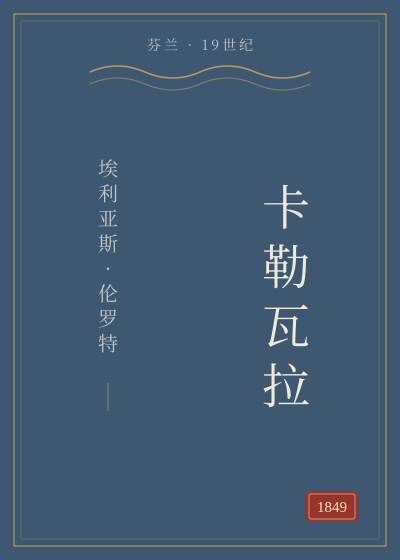
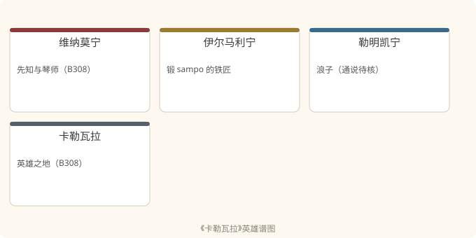

卡勒瓦拉
一、基本信息
| 作者 | 埃利亚斯·伦罗特（Elias Lönnrot）编纂——芬兰民间口传歌谣辑录 |
|---|---|
| 成书/出版 | 1835年初版（32篇）、1849年定版（50篇）（Britannica：two editions (32 cantos, 1835; enlarged into 50 cantos, 1849)） Kalevala — Encyclopaedia Britannica（百科全书） |
| 国别/地区 | 芬兰 |
| 时代 | 近代 · 19世纪 |
| 体裁 | 民族史诗（编纂） |
| 语言 | 芬兰语 |

《卡勒瓦拉》英雄谱图（主题·结构图）
二、创作背景
Britannica（B308）：'compiled from old Finnish ballads, lyrical songs, and incantations that were a part of Finnish oral tradition'——从芬兰口传传统辑录。
两版（B308）：32 cantos (1835)；enlarged into 50 cantos (1849)。
地位（B308）：'Kalevala, Finnish national epic'——fostering 'the Finnish national spirit'、'translated into at least 20 languages'、启发 Gallen-Kallela 绘画与 Sibelius 音乐、Longfellow《海华沙之歌》（B308）。
三、内容脉络
维纳莫宁——'the old and wise'、'a powerful seer with supernatural origins'、'a master of the kantele, the Finnish harplike stringed instrument'（B308）。
伊尔马利宁锻造'sampo'（神磨）（B308 语境：tales including the forging of the sampo）。
'Kalevala……a poetic name for Finland, meaning land of heroes'（B308）。
四、主要人物表
| 人物 | 身份 | 说明 |
|---|---|---|
| 维纳莫宁 | 先知歌者 | 'old and wise'（B308） |
| 伊尔马利宁 | 铁匠 | 锻 sampo（B308 语境） |
五、主题与艺术特点
- 口传传统的辑录与民族史诗（B308）。
- '卡勒瓦拉'：英雄之地（B308：land of heroes）。
- sampo 的锻造与争夺（通说待核）。
六、影响与评论
- Britannica：芬兰民族史诗——fostering 'the Finnish national spirit'（B308）。
Kalevala — Encyclopaedia Britannica（百科全书） - Britannica：'translated into at least 20 languages'；启发 Sibelius 音乐与 Longfellow《海华沙之歌》（B308）。
Kalevala — Encyclopaedia Britannica（百科全书）
七、阅读建议
难点
- 芬兰语史诗韵律（卡勒瓦拉体）。
- 神话谱系。
- 《卡勒瓦拉》（人民文学出版社/上海译文版本，通说待核）。
- 芬兰文原版（公有领域）。
芬兰文学首选。
八、待核实
- 50篇（cantos）结构核对。
- 'sampo'锻造情节核对。
- Lönnrot 各次田野采集（1831—35说）待核。